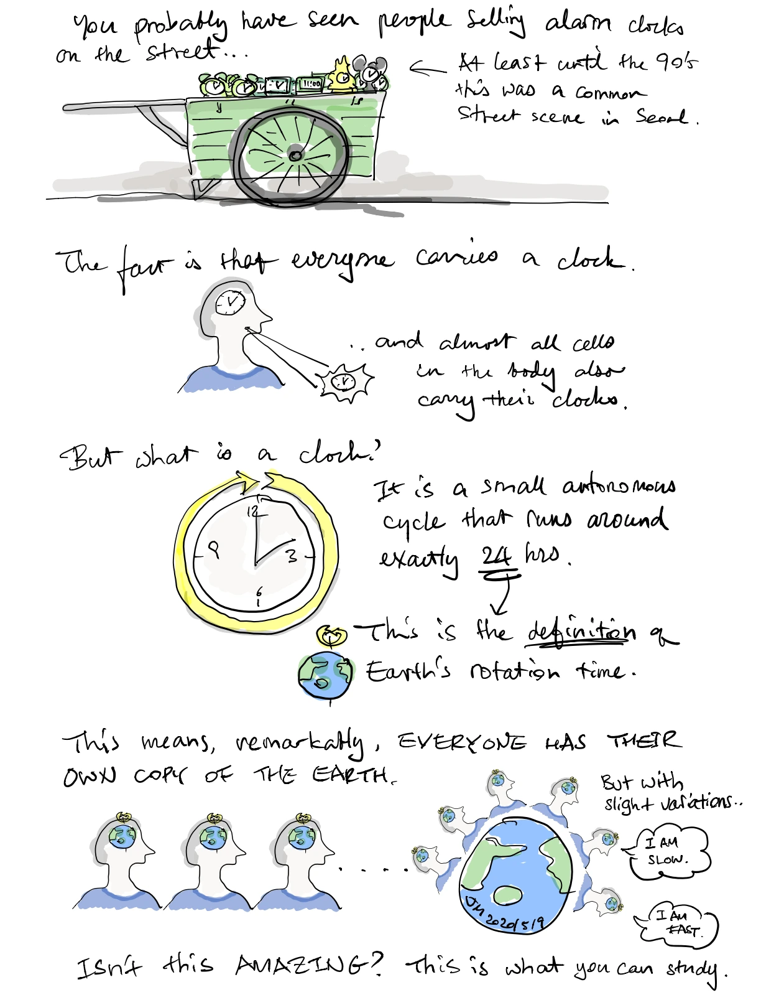

Why join Braintime?
Everyone carries
a clock.
And almost every cell carries one, too.
A short illustrated journey into the timekeepers inside us, from Jihwan Myung’s sketchbook.
01 · Clocks within
A whole society
of timekeepers.
We do not need to carry an alarm clock to carry time. Our brains and bodies contain biological clocks, and almost all cells have their own.
At Braintime Lab, we ask how these clocks work together, how they develop, and how they connect to behavior and mood.
Explore the society of body clocks02 · A day inside us
Your own little
copy of the Earth.
A circadian clock is an autonomous cycle that runs for approximately 24 hours. Its rhythm echoes the daily cycle of our rotating planet.
In the words of the original sketch: Everyone has their own copy of the Earth.
A metaphor for the day we carry within.
03 · Different rhythms
Same planet.
Slightly different clocks.
Our internal rhythms are not identical. Explore the sketch’s “I am slow” and “I am fast” idea by changing the time elapsed below.
All three clocks start at the same phase.
Illustrative periods only, not measurements of people or cells. These clocks run freely without daily light cues; real biological clocks can be entrained by their environment.
04 · Come explore
“Isn’t this amazing?
This is what you can study.”
From molecular clocks to neural circuits, development, time perception and mood: bring your curiosity about time.
From the sketchbook · View the original illustrated page
